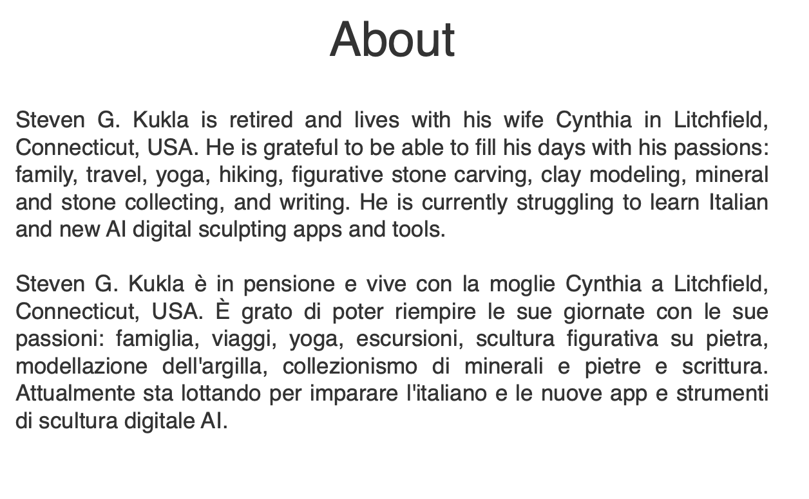

Stone · Clay · Words · Music
Steven G.
Kukla
Figurative sculptor, writer & AI composer — Litchfield, Connecticut
Marble, limestone, slate, alabaster, onyx, soapstone & clay — carved by hand and pneumatic chisel.
See the work →Poems from the book reimagined as songs — original lyrics, arrangements & AI-generated music, released on all major platforms.
Listen →Featured Work
A selection from across disciplines

Stone & Clay Works
Figurative works in marble, slate, limestone, onyx, alabaster, and clay — carved with traditional tools and pneumatic air chisels.
Browse Gallery
Strong Roots, Good Fruit
A bilingual English–Italian graphic novella tracing family heritage rooted in southern Italy. Available for preview, download, and purchase.
View Book
SGKAbout Steven
Retired and living with his wife Cynthia in Litchfield, Connecticut — grateful to fill his days with family, travel, yoga, hiking, figurative stone carving, clay modeling, mineral collecting, and writing.
Full Bio